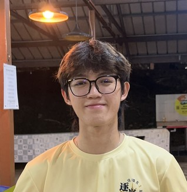

Team Zero SE
WIA2006 · System Analysis & Design
Progress 5
FSKTMAP
DATA GATHERING METHODS
INTERVIEW · QUESTIONNAIRE · OBSERVATION.
THE TEAM
GROUP LEADER
Low Guan Hoong

Looi Yu Zhi
Ng Jing Xun
Tai Yun Yi

Yong Jun Onn